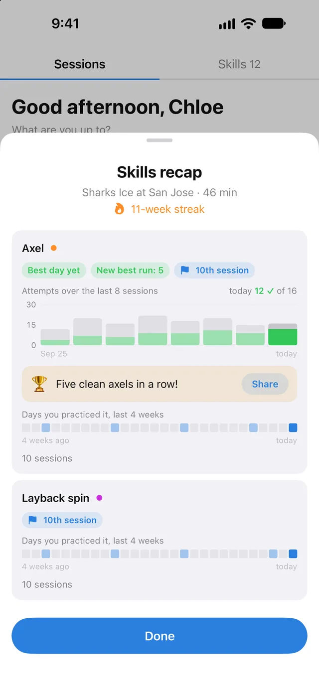

Rinkfolio : trouvez, notez et partagez votre patinage
Rinkfolio est un journal d'entraînement en patinage artistique gratuit et une carte mondiale de près de 24 000 patinoires dans plus de 100 pays, pour les patineurs de tous les niveaux.
Gratuit sur l'App Store aux États-Unis
Bêta Android : écrivez à @rinkfolio sur Instagram ou par courriel pour la rejoindre
Suivez @rinkfolio sur Instagram
L'application est en anglais.
Comptez chaque essai
Commencez une séance à la patinoire et touchez ✓ ou ✗ après chaque essai. L'écran reste allumé, et ça fonctionne sans réseau.

Voyez où vous en êtes
Après chaque séance, un bilan montre votre meilleure journée, votre nouvelle meilleure série et votre premier atterrissage réussi, avec les essais de chaque élément au fil de vos dernières séances.

Retenez les conseils de votre entraîneur
Gardez les points clés à retenir pour chaque élément, décidez ce qui mérite un ✓, et voyez comment l'élément progresse avec le temps.

Trouvez des patinoires
Parcourez une carte mondiale des patinoires intérieures et extérieures, ainsi que des endroits de glace naturelle. Enregistrez celles que vous voulez visiter, marquez celles où vous avez patiné, choisissez vos patinoires d'attache, et partagez des notes et des photos sur les patinoires avec les autres patineurs.

Patinez avec d'autres
Suivez d'autres patineurs, réagissez à leurs notes et à leurs réussites, et partagez votre profil avec un lien ou un code QR.

Rinkfolio est conçu avec les commentaires des patineurs qui l'utilisent. Des questions ou des idées? Consultez les questions fréquentes ou écrivez à rinkfolioapp@gmail.com.